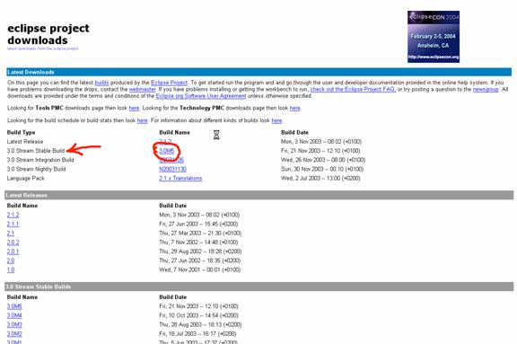
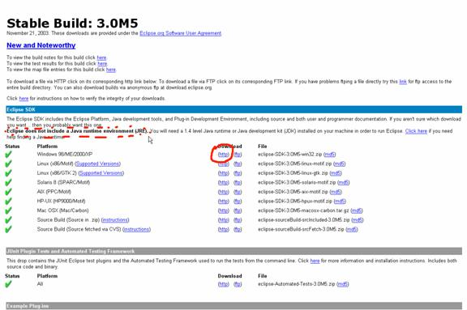

To download Eclipse direct your almighty browser to: http://www.eclipse.org/downloads/index.php
Select a mirror which you like. I personally prefer using the http protocol. Here is a picture of what you will see:
Now from the mirror page choose the latest stable build of the 3.0 stream (at the time of writing 3.0M5). Here is a picture:

And from next page download the version for Windows systems as depicted in the next picture:

Please note that in this page there is a warning saying that Eclipse needs a JRE or a JDK. We are going to install the latter which is needed to be able to compile our Freemind's source.
Eclipse is delivered as a simple .ZIP file which contains an “eclipse” directory. Extract this directory where you like. In my case I have unzipped the file in C:\Programmi thus creating a C:\Programmi\eclipse directory containing all of Eclipse environment.
I also created an Eclipse icon shortcut on the desktop and in the Start->Programs menu.
When you start Eclipse for the first time you will see a brief notice that says “Finishing the installation”. You will now be presented with Eclipse's GUI.